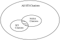

This article is a US Government work and, as such, is in the public domain in the United States of America.

Research Article
You have full text access to this content
Determining the publication impact of a digital library
Article first published online: 11 FEB 2000
DOI: 10.1002/(SICI)1097-4571(2000)51:4<324::AID-ASI3>3.0.CO;2-B
Copyright © 2000 John Wiley & Sons, Inc.
Issue

Journal of the American Society for Information Science
Special Issue: Digital Libraries: Part 2
Volume 51, Issue 4, pages 324–339, 2000
Additional Information(Show All)
How to CiteAuthor InformationPublication History
How to Cite
Kaplan, N. R. and Nelson, M. L. (2000), Determining the publication impact of a digital library . J. Am. Soc. Inf. Sci., 51: 324–339. doi: 10.1002/(SICI)1097-4571(2000)51:4<324::AID-ASI3>3.0.CO;2-B
Publication History
- Issue published online: 11 FEB 2000
- Article first published online: 11 FEB 2000
- Manuscript Accepted: 2 JUL 1999
- Abstract
- Article
- References
- Cited By
Abstract
- Top of page
- Abstract
- Introduction
- Use and Dissemination of NASA STI
- Langley Technical Report Server
- NASA STI Program
- Methodology
- Findings
- Discussion
- Related Work
- Future Work
- Conclusions
- Acknowledgements
- REFERENCES
- APPENDIX A.
- Appendix B.
We attempt to assess the publication impact of a digital library (DL) of aerospace scientific and technical information (STI). The Langley Technical Report Server (LTRS) is a digital library of over 1,400 electronic publications authored by NASA Langley Research Center personnel or contractors and has been available in its current World Wide Web (WWW) form since 1994. In this article, we examine calendar year 1997 usage statistics of LTRS and the Center for AeroSpace Information (CASI), a facility that archives and distributes hard copies of NASA and aerospace information. We also perform a citation analysis on some of the top publications distributed by LTRS. We find that although LTRS distributes over 71,000 copies of publications (compared with an estimated 24,000 copies from CASI), citation analysis indicates that LTRS has almost no measurable publication impact. We discuss the caveats of our investigation, speculate on possible different models of usage facilitated by DLs, and suggest “retrieval analysis” as a complementary metric to citation analysis. While our investigation failes to establish a relationship between LTRS and increased citations and raises at least as many questions as it answers, we hope it will serve as an invitation to, and guide for, further research in the use of DLs.
Introduction
- Top of page
- Abstract
- Introduction
- Use and Dissemination of NASA STI
- Langley Technical Report Server
- NASA STI Program
- Methodology
- Findings
- Discussion
- Related Work
- Future Work
- Conclusions
- Acknowledgements
- REFERENCES
- APPENDIX A.
- Appendix B.
The National Aeronautics and Space Act of 1958 created NASA from its predecessor, the National Advisory Committee for Aeronautics, and charged the new administration with:
The aeronautical and space activities of the United States shall be conducted so as to contribute … to the expansion of human knowledge of phenomena in the atmosphere and space. The Administration shall provide for the widest practicable and appropriate dissemination of information concerning it activities and the results thereof.
NASA reports on its activities both through the traditional scientific literature and its own report series. A large body of work exists documenting production of this information, its consumption by the aerospace community as a whole and as individuals, its relation to foreign analogs, and its impact on economic and public policy (Pinelli, Barclay, Kennedy, & Bishop, 1997). However, a significant portion of this work was performed prior to the prevalence of the Internet, WWW, and DLs. As late as 1994, WWW usage for STI applications by the aerospace community was still somewhat rare (Roper, McCaskill, Holland, et al., 1994), and Bishop's (1997) focused study of computer network use occurred in 1993. A later study (Kennedy, Pinelli, & Barclay, 1997) on the full spectrum of information use (covering the years 1995 and 1996) found significant WWW usage in the aerospace community, but their study did not focus specifically on WWW or DL usage.
Given the tremendous proliferation of the WWW, we wish to examine NASA STI usage from the perspective of potential impact of DLs that have been facilitated by the universality of WWW. A 1990 survey showed that traditionally low accessibility of NASA literature did not impede their use by the aerospace community (Barclay, Pinelli, & Kennedy, 1997). However, in that survey, the highest percentage method for discovery and use of NASA STI was from one's personal collection of STI. Our hypothesis is that DLs will make it easier to gain awareness and use of NASA STI, and possibly play a significant role in creating and augmenting one's personal store of STI (“bookmarking” files, printing them out, etc.). A follow-up survey concerning the respondents' attitudes toward and self-perceived usage of DLs would be useful, but our efforts are attempts to measure actual usage and dissemination.
Use and Dissemination of NASA STI
- Top of page
- Abstract
- Introduction
- Use and Dissemination of NASA STI
- Langley Technical Report Server
- NASA STI Program
- Methodology
- Findings
- Discussion
- Related Work
- Future Work
- Conclusions
- Acknowledgements
- REFERENCES
- APPENDIX A.
- Appendix B.
Measuring use and dissemination of STI is inherently difficult. The common approach is to make a number of simplifying assumptions to make the problem tractable. For example, “use” of a document is often measured by citation analysis, even though the limitations of citation analysis are well known (Garfield, 1979; Lindsey, 1989; Schubert & Braun, 1993). In the absence of a more compelling metric, citation analysis remains the best commonly available indicator of usage. In measuring dissemination, measurement is almost always limited to primary dissemination. Secondary, or “collegial,” dissemination is difficult to estimate, much less measure.
STI Use
One of the greatest weaknesses of the traditional science citation methodologies is the limited scope of the citation index. The definitive tool for conducting citation analysis in the sciences, the Institute for Scientific (ISI) Information Science Citation Index (SCI), tracks only citations in the journal literature. It does not consider works cited in technical reports, conference proceedings, books, or electronic literature. This is significant, especially because works published in one format often tend to cite works published in a similar format. For example, a NASA technical report often cites a number of other NASA technical reports, electronic journal articles cite other electronic journal articles, etc. Since these types of works are not covered by the citation indexes, their impact is not well understood. Citation analysis must be augmented with other methods to accurately reflect usage of items not well represented in the citation indexes, e.g., books, technical reports, conference proceedings, and electronic documents (Cameron, 1997).
Another issue with citation analysis is uncertainty about what citation counts measure. The importance of citation counts in determining a scientific author's “success” varies widely among different fields and disciplines. There is also much about the meaning of citation rates that remains unknown: do they measure quality of scientific performance, or interest in a particular topic, or a combination of those things? If a paper is not cited, does this mean that it is of low quality or little interest to other scientists? “Uncitedness” is a controversial topic, spurred by a report that 55% of STI literature does not receive a single citation within 5 years of publication (Hamilton, 1990). There are several refutations and extensions on this subject (Schwartz, 1997) and the exact numbers are a subject of debate, but we simply assume that uncitedness occurs at some significant level. Methodological papers in the sciences are often not highly cited, nor are “obvious, classical” works that authors leave out because they are so well known (Garfield, 1979). There is also evidence that supports the claim that not all citations should be considered “good”; some citations have more complex motivations such as negation or refutation (MacRoberts & MacRoberts, 1984; Brooks, 1986). Although citation analysis provides a measure of a work's impact on the scholarly community, it is only one element in a spectrum of factors that should be considered.
Figure 1 illustrates the problem of citation analysis using the SCI. If we consider the set of all citations in all STI works, a subset is contained within the scope of the SCI, and another subset represents citations to NASA literature. We know the cardinality of the SCI set, and we can measure the intersection but the SCI and NASA sets, but the cardinality of the universal set and the NASA set are unknown.

1097-4571(2000)51:4%3C324::AID-ASI3%3E3.0.CO;2-B/asset/image_n/nfig001.gif?v=1&t=hqy3m4lb&s=49101fce9cd7a21cde4781f8cd6df648a5607847){kind=link}
Figure 1. The universal citation space.
1097-4571(2000)51:4%3C324::AID-ASI3%3E3.0.CO;2-B/figure.pptx?figureAssetHref=image_n/nfig001.gif){kind=link}
Despite the limitations associated with the theory and practice of citation analysis, it has become a standard metric for determining impact, both for the utility of what it measures and due to the absence of a widely accepted rival or companion metric.
STI Dissemination
Before NASA STI can be put to use, the candidate user must be aware of it and have access to it. We partition the methods of NASA STI dissemination as follows:
Hard copy (paper and microfiche) –Official (CASI orders, initial mailing list) –Unofficial (photocopies, collegial distribution)
Soft copy (any digital format) –Official (digital library) –Unofficial (collegial distribution of digital formats, mirrors of DLs)
Actual numbers are given in the following sections, but we can make several general observations. In hard copy distribution, the official numbers are low and have not changed over the last several years. The unofficial hard copy distribution numbers are unknown, but again there is no reason to suspect the numbers have changed significantly over the last several years. In soft copy distribution, most DLs began in 1993 or after, and did not become commonly used in the aerospace industry until after 1994. NASA DL usage increases every year, and it is reasonable to assume that DLs have made NASA STI both more readily available to pre-DL NASA STI users, and may have also made NASA STI available to those that did not use it prior to its availability in NASA DLs. Numbers for unofficial soft copy distribution, like unofficial hard copy distribution, are unknown. However, we can assume that WWW and improved word processing technologies have made it easier for authors to informally share preprints and reprints. Also, once an item has been retrieved from a DL, its existence in digital format could also increase the number of unofficial disseminations it receives.
Of the four methods of STI dissemination outlined above, two (unofficial soft and hard copy) are unknown and probably unmeasurable. A third (official hard copy) is known, but small and static. The fourth (official soft copy—DL) is measurable, growing annually, and posts much larger numbers than official hard copy distribution. As such, the remainder of this paper will focus on the impact of DLs on use and dissemination. In particular, we focus on the impact of a NASA DL on citation analysis, and the comparison of NASA DL dissemination versus hard copy dissemination.
Langley Technical Report Server
- Top of page
- Abstract
- Introduction
- Use and Dissemination of NASA STI
- Langley Technical Report Server
- NASA STI Program
- Methodology
- Findings
- Discussion
- Related Work
- Future Work
- Conclusions
- Acknowledgements
- REFERENCES
- APPENDIX A.
- Appendix B.
With the WWW as an enabling technology, DLs have become an invaluable resource for authors, researchers, and institutions alike. While a fully integrated, multidiscipline STI DL has yet to emerge, there have been a number of production-quality DLs in use for several years, mostly segregated along institutional and discipline boundaries (Esler & Nelson, 1998).
NASA's digital library, the NASA Technical Report Server (NTRS), has grown since its beginnings in 1994 (Nelson, Gottlich, Bianco, et al., 1995). The NTRS today serves an important role in the distribution of scientific and technical information for the Agency. It provides a front-end interface to 20 separate digital library collections, which include over 3.3 million abstracts and over 40,000 full text reports.
The LTRS is one of the digital library collections available through NTRS, and was the predecessor to the NTRS (Nelson & Gottlich, 1994; Nelson, Gottlich, & Bianco, 1994). The LTRS contains papers, reports, and other materials produced by the scientists and researchers at the NASA Langley Research Center. The LTRS segment of the NTRS is the focus of this paper.
We compare the usage of a digital library collection (LTRS) with the usage of a traditional document delivery service. There are four components to this study. First, we determine the usage of documents contained in the LTRS based on WWW access statistics. Second, we determine the impact of the most frequently accessed items, based on citation analysis. We wish to determine if the visibility of digital documents increases their citation rate. Third, we draw conclusions about dissemination channels for NASA scientific and technical information, based on analysis of the data and comparisons with traditional document delivery services within NASA. Finally, we suggest a new publication metric technique, retrieval analysis, to complement the traditional citation analysis.
NASA STI Program
- Top of page
- Abstract
- Introduction
- Use and Dissemination of NASA STI
- Langley Technical Report Server
- NASA STI Program
- Methodology
- Findings
- Discussion
- Related Work
- Future Work
- Conclusions
- Acknowledgements
- REFERENCES
- APPENDIX A.
- Appendix B.
NASA's STI Program, established to support the acquisition, archiving, and dissemination of the information produced by NASA, provides the main distribution mechanism for the technical reports and related works that originate from NASA Headquarters and NASA's 15 field centers and offices across the United States. The NASA CASI, a component of the NASA STI Program, serves as the archival and document delivery facility for literature available through NASA. It is the NASA equivalent of the Department of Defense's Defense Technical Information Center (DTIC) and the Department of Energy's Office of Scientific and Technical Information (OSTI). The CASI provides access to bibliographic data on NASA reports through its online system, RECON, and distributes hard copies of NASA reports on a cost recovery basis. Documents can be ordered via automatic distribution (i.e., an organization may choose to receive all of NASA's reports individually or in a certain series or subject area).
In addition to the document delivery services offered through the NASA STI Program, other vehicles for disseminating NASA information have developed, especially since the advent of the Internet and the WWW, e.g., NASA Image Exchange (NIX) serving photographic images, COSMIC serving software, and the NTRS, serving technical reports. Because they map closer to traditional document dissemination, our focus will be on the components of NTRS. Table 1 provides the Uniform Resource Locators (URLs) for these services.
| Digital library | STI type | URL |
|---|---|---|
| NASA image exchange | Images | http://nix.nasa.gov/ |
| COSMIC | Software | http://www.cosmic.uga.edu/ (defunct as of 7/24/98; no replacement at time of writing) |
| NASA technical report server | Publications | http://techreports.larc.nasa.gov/cgi-bin/NTRS |
Although the NTRS provides one interface to 20 different digital library collections, the separate digital library collections can also be searched independently of NTRS. The NTRS and its components use a WWW interface with a Wide Area Information Server (WAIS) (Kahle, Morris, Davis, Tiene, Hart, & Palmer, 1992) search engine, which accesses the abstracts and bibliographic information for the available items. When a user submits a search, the query is passed in parallel to each database server. The database servers will return the query results to the NTRS interface, which presents the results for the user in Hypertext Markup Language (HTML) format. The results list includes the bibliographic data for each item with links to whatever full text versions are available. Most full text documents are available in PostScript (PS), Portable Document Format (PDF), or HTML format and many are available in more than one format. Table 2 gives a summary of the NTRS databases and their content.
| Server name | Responsible organization | Approximate number of abstracts | Approximate number of full reports | Subject areas |
|---|---|---|---|---|
| Ames Technical Reports Server (ATRS) | NASA Ames Research Center | 100 | 100 | Aerospace |
| Astronomy and Astrophysics | NASA Astrophysics Data System | 390,000 | 40,000 | Astronomy, astrophysics |
| Dryden Technical Reports Server (DTRS) | NASA Dryden Flight Research Center | 200 | 130 | Aerospace |
| GISS Publications Online | Goddard Institute for Space Studies | 800 | 60 | Space science |
| Goddard Technical Reports Server (GTRS) | NASA Goddard Space Flight Center | 100 | 3 | Space science |
| ICASE Publications | Institute for Computer Applications in Science and Engineering | 350 | 350 | Computer science, mathematics |
| JPL Technical Reports Server (JPLTRS) | Jet Propulsion Laboratory | 4,100 | 4,100 | Space science |
| Johnson Technical Reports Server (JTRS) | NASA Johnson Space Center | 75 | 15 | Space science |
| Kennedy Technical Reports Server (KTRS) | NASA Kennedy Space Center | 10 | 10 | Launch vehicles |
| Langley Technical Reports Server (LTRS) | NASA Langley Research Center | 1,400 | 1,400 | Aerospace |
| LANL Astrophysics E-Prints | NASA Astrophysics Data System | 2,000 | 2,000 | Astrophysics |
| Lewis Technical Reports Server (LeTRS) | NASA Lewis Research Center | 2,200 | 250 | Aerospace |
| Marshall Technical Reports Server | NASA Marshall Space Flight Center | 300 | 300 | Space science |
| NACA Reports—Abstracts | NASA Langley Research Center | 13,000 | 0 | Aeronautics |
| NACA Reports Server | NASA Langley Research Center | 400 | 400 | Aeronautics |
| Physics and Geophysics | NASA Astrophysics Data System | 280,000 | 0 | Physics, geophysics |
| RECONselect | NASA Center for Aerospace Information | 2,200,000 | 0 | All disciplines |
| Selected Current Aerospace Notices | NASA Center for Aerospace Information | 2,000 | 0 | All disciplines |
| Space Instrumentation | NASA Astrophysics Data System | 477,000 | 0 | Physics, space science |
| Stennis Technical Reports Server | NASA Stennis Space Center | 2 | 2 | Life sciences |
The material available through each NTRS node varies widely, from bibliographic data only, to partially complete publications (i.e., some figures missing), to complete full-text publications. As of May 1998, there were over 1400 reports available online through LTRS. Holdings of the LTR include NASA formal reports, NASA “quick-release” reports, NASA conference publications, contractor reports, journal preprints, conference preprints and reprints, and theses and dissertations of NASA staff members.
Methodology
- Top of page
- Abstract
- Introduction
- Use and Dissemination of NASA STI
- Langley Technical Report Server
- NASA STI Program
- Methodology
- Findings
- Discussion
- Related Work
- Future Work
- Conclusions
- Acknowledgements
- REFERENCES
- APPENDIX A.
- Appendix B.
The NTRS is an interface to 20 separate DL collections and has no holdings of its own. As a result of this distributed architecture and the hypertext transfer protocol (http), there is no central log of which reports have been accessed. The NTRS tracks searches, but only the archive holding the actual electronic copy of the publication will log a retrieval of the publication. While it would have been preferable to perform this study using all the nodes in the NTRS, we selected the LTRS for study because we had immediate access to the log files.
Table 3 compares the profiles of the LTRS and CASI. The CASI provides access to three orders of magnitude more documents than the LTRS. The LTRS has no restricted documents, and does not charge for access to the documents. Presumably no access charge and the convenience of electronic retrieval contribute to the LTRS having roughly three times as many documents distributed. All numbers for the CASI are estimated, based on discussion with the CASI personnel.
| LTRS | CASI | ||
|---|---|---|---|
| Unrestricted documents | 1,400 | 2,300,000 | |
| Restricted documents | 0 | 1,200,000 | |
| CY 1997 documents distributed | 71,000 | 24,000 | |
| Direct user cost per document | $0 | $8–$83 (standard price codes, domestic destination) | |
Using Langley's server logs, we examined accesses of the LTRS documents for the calendar year 1997. The server logs for LTRS measured two separate points of access. One log recorded requests for items in PostScript format, which for historical reasons are served through the file transfer protocol (FTP). The other log included requests for Portable Document Format and hypertext markup language documents, which are served through http. The lists were ranked from most frequent to least frequently accessed items. Items not accessed were not included on either list. Each log file entry included the path and filename for the document accessed, and a number representing the total accesses to that file for the year.
In order to come up with final access numbers for one document, we had to consider accesses to multiple formats of that item, which meant combining the results of both log files. We examined and compared the logs manually, to ensure the most accurate and careful approach.
Since we had two sets of log files to consider (PDF and HTML, served through http and PS, served through FTP) we had to compare file names across the two lists. In some cases, where a particular document was available in all file types (PDF, HTML, and PS), multiple accesses for one item might occur in the same log. We carefully examined each entry and ensured that it represented a unique instantiation of that document. In cases where a particular document was represented more than once in the same list, we added up the total number of accesses for that document in that list, and then combined the sum with the accesses from the other list. Fortunately, the file names for different formats of the same document followed a consistent pattern, so the documents could be identified fairly easily. For example, the paper “Accessing NASA Technology with the WWW” is available in PS, PDF, and HTML formats. The log file entries for these three formats are similar enough to be easily identified, as shown below:
However, there were cases that required close examination to determine final access numbers for a document. HTML format items were more difficult than other types. Since many items are submitted to LTRS by the original authors, there is not always consistency in how they are presented or formatted. Sometimes authors would break one HTML document into multiple pages, and each page would turn up in the logs with a number of hits. By looking closely at the log file and comparing it to the actual item on LTRS, we could tell when we were dealing with one of those items. To come up with a final count for those items, we would take an average of the hits for each page, or count the accesses on the first page of the document as total document accesses.
There were also cases where, in addition to multiple formats, some items had supplementary material available online. We could usually identify these in the logs because they were in different formats (such as ASCII) or had names indicating their nature (e.g., NASA-95-tm4648-appendixA.html). With those items, we would generally decide on a case by case basis if the nature of the supplementary material warranted adding numbers to the main document's count. This situation was uncommon and did not greatly impact the document counts.
After extensive examination of the two logs, we determined the top 50 items requested through the LTRS and compiled a master list. For each of these, we revisited the LTRS to make sure we had correctly considered all formats in compiling the access numbers. We also recorded a complete citation for each item from the bibliographic information provided.
The next step was to conduct a citation analysis of the top 50 items by simultaneously searching SCI and Social Science Index through the DIALOG system. We searched for each of the 50 items using the Cited Reference (CR) field, which searches the works referenced in a particular paper. We used the EXPAND command to rule out overlooked items by browsing. When we identified a match, we used the SELECT command to choose apparent hits, then displayed and saved the relevant records for further analysis. A sample search, showing proper search syntax, is displayed in Figure 2. In this sample case, we were searching for citations to a 1995 NASA report by Zachary Applin. Item E5 in the EXPAND results lists is an apparent match.
1097-4571(2000)51:4%3C324::AID-ASI3%3E3.0.CO;2-B/asset/image_n/nfig002.gif?v=1&t=hqy3m4nf&s=60c421542276dfaaf926a35ea8344c4c9a3a4990){kind=link}
1097-4571(2000)51:4%3C324::AID-ASI3%3E3.0.CO;2-B/figure.pptx?figureAssetHref=image_n/nfig002.gif){kind=link}
The citation index data is very minimal, and may or may not include complete information on the cited work. For this reason, it is often impossible to determine the type of source cited (i.e., print or electronic) from the cited reference information alone (Harter, 1996). Since all of the items available through LTRS are available in print format as well as electronic, we looked at the citing work for all the items to see if we could determine which version had been referenced by the citing author.
The next step in the project was to compare LTRS accesses with actual requests for hard copies of similar items through NASA CASI's document delivery service. We first had to determine which of the top 50 items were actually available through the CASI, since not all items in the LTRS are distributed via formal NASA channels. We identified the availability of the items by checking NASA CASI's online information system, RECONplus. Items that can be ordered through CASI have an availability statement and price code in the bibliographic record, which makes them easy to identify. Of the top 50 items, 19 were available for ordering through the CASI. We contacted the CASI to obtain their 1997 ordering statistics for those 19 items.
We also asked the CASI to identify their top requested items from 1997. We did not ask them to limit their list to Langley-originated documents for several reasons. First, it would have been difficult for them to identify works originating at Langley, since for some types of material (for example, Contractor Reports) the responsible NASA center is not explicitly defined in the bibliographic information. Since the CASI tracks their documents by report number or accession number, this type of statistic is difficult to gather. Second, we felt that by getting the CASI's “top sellers,” we could view our LTRS numbers in the wider context of total materials provided to the public by NASA. As the CASI provides two types of document delivery, initial distribution of items and on-demand requests for specific items, they track both in their statistics. We received statistics for both categories of items provided through the CASI in 1997.
Findings
- Top of page
- Abstract
- Introduction
- Use and Dissemination of NASA STI
- Langley Technical Report Server
- NASA STI Program
- Methodology
- Findings
- Discussion
- Related Work
- Future Work
- Conclusions
- Acknowledgements
- REFERENCES
- APPENDIX A.
- Appendix B.
LTRS Accesses
Appendix A summarizes Langley's top 50 most requested LTRS items for 1997. The table shows the items in order from most to least accesses and includes a brief bibliographic citation, total access count, and list of available formats for each item. It also indicates whether each item is available through the CASI's document delivery service. Access numbers through the LTRS demonstrate that the system received significant activity in the 1997 calendar year. The top requested document was requested 672 times and each of the top ten items had over 400 accesses. For the entire collection of approximately 1400 documents, there were over 71,000 document deliveries by the LTRS in 1997.
There are caveats when considering the LTRS access numbers. First, no attempt was made to throw out “testing” accesses, people driving up their own access counts, users reloading documents because of difficulties with a file, etc. Second, accesses are not normalized with respect to time available. That is, a paper made available on the LTRS in November 1997 will have less chance to collect hits than a 1995 paper that was available through all of 1997. Third, there are special considerations with http traffic: http servers are susceptible to hits by robots, which could inflate the access numbers slightly. Access numbers for items served via http could also be underrepresented due to caching proxies (or client caches, or mirror sites) returning a requested item out of the cache rather than from the LTRS server. Also, some authors choose to make their items available from their own local servers, which would deflate our http numbers. Finally, the “browsability” factor of http-served items, especially HTML files, needs to be considered. Items in HTML especially, are more likely to be picked up by a robot or browsed because they are “convenient”; these hits do not necessarily reflect serious interest on the part of a user.
Citation Analysis
Citation analysis of the top 50 requested items through LTRS did not demonstrate significant results. Table 4 shows a summary of results. Only 11 of the 50 items were cited. We could not conclusively determine the impact of the LTRS versions of these works through citation analysis or examination of the citing works. Most of the citing works appeared to refer to printed versions of these items; i.e., a traditional print citation format, including page numbers, was used.
| Rank (from Appendix A) | Author(s) and source | Number of citations | Apparent format of work referenced | ||
|---|---|---|---|---|---|
| Electronic | Unclear from citation | ||||
| |||||
| 4 | Nelson et al., Internet Research 5(2): 25–36 | 2* | 2 | — | — |
| 9 | Dean, AACE Transactions: D.4.1-D.4.6 | 1 | 1 | — | — |
| 10 | Storaasli, et al., International Journal of Computer Systems in Engineering, 4(4–6): 1–10 | 6 | 6 | — | — |
| 20 | Nemeth, NASA-TP-3587 | 1 | 1 | — | — |
| 21 | Applin, NASA-TM-110148 | 1 | — | — | 1 |
| 25 | Stoorasli, AIAA Paper 96-1505 | 1 | 1 | — | — |
| 34 | Kaplan and Nelson, NASA-TM-109025 | 2 | — | — | 2 |
| 38 | Nelson and Bianco, 2nd WWW Conference: 701–710 | 1* | 1 | — | — |
| 44 | Dean, Intl' Engineering Management Conference '92 | 1 | 1 | — | — |
| 47 | DiVito and Roberts, NASA-CR-4752 | 1 | — | — | 1† |
| 49 | Palmer et al., NASA-TM-109171 | 1 | — | — | 1 |
For a few of the citations, especially the NASA reports, it was impossible to determine whether a print source or an electronic source was consulted, since only the report title and number were included in the citation. Even for these, the lack of a Uniform Resource Location (URL) in the citation might suggest the printed source was consulted; however, there are many reasons why authors might not include a URL in a citation. No accepted style for specifying on-line versions of publications has emerged, and journals vary in their permissiveness regarding URLs in citations. Another consideration is most authors do not include an item's availability in their citations. Some specialized publications, such as bibliographies, might state where the cited works could be obtained, but most authors of scientific works do not include such information in their list of references. Finally, since the LTRS does include bibliographic information for its items, it is possible that an author who used the LTRS to obtain a paper might merely copy the bibliographic citation provided without noting the URL. This occurrence would be impossible to identify since an LTRS citation looks like a “traditional” citation, down to the volume and page number of the print source.
Conversely, although the presence of a URL in a citation would not mean that a DL was used for initial discovery of the report, it does imply DL awareness. Even if the authors receive NASA STI from hardcopy sources or collegial softcopy sources, the presence of http://techreports.larc.nasa.gov/ltrs/ in the citation does imply knowledge of, and advertise to others, the existence of LTRS.
The limited observed impact of the citation data is disappointing, but not completely unexpected. As depicted in Figure 1, many of the citations to NASA publications will lie outside the scope of SCI.
For comparison purposes, we attempted to estimate the number of NASA citations that do appear in SCI. This is a rough estimate for several reasons. First, although NASA DLs contain more than just NASA reports (e.g., meeting papers comprise as much as one third of the LTRS's contents), we can only search SCI for NASA reports, not NASA authored journal articles or meeting papers. Furthermore, unlike journals, citation methodology for technical reports varies widely, and SCI contains many NASA citations that are incomplete (i.e., many citations are simply attributed as “NASA Report” or just “NASA” with no document numbers given). We searched SCI for papers that cited NASA publications authored between 1990–1999 (of which there are approximately 26,000). Of those papers, all of their citations were pulled together (approximately 8000 citations), and we took the top 50 NASA citations (Appendix Appendix B.). Surprisingly, even though the search was biased toward publications citing a NASA report from the 1990s, citations to the older material (1960s–1980s) dominates the top 50—only four of the top 50 citations are from the 1990s. The most cited NASA publication was 117 times and was published in 1974. Item 50 was cited 17 times and published in 1989. Most of the top 50 cited works were Conference Publications (CPs; NASA sponsored conference proceedings), Reference Publications (RPs; often textbook type publications), and Special Publications (SPs; SPs were used for technical books and proceedings prior to the use of the CP and RP series).
Comparison to the CASI Orders
Our final point of comparison was the LTRS accesses versus the CASI orders. As previously mentioned, only 19 of the top 50 items requested through the LTRS in 1997 are available through the CASI. Of those 19, only five were requested from the CASI in 1997. Table 5 gives the total number of orders received by the CASI for each item.
| Rank (from Appendix A) | Author and brief citation | No. of orders via the CASI in 1997 |
|---|---|---|
| ||
| 11 | B.N. Cox and G. Flanagan, NASA CR-4750. | 5 |
| 14 | Charles L. Ladson et al., NASA TM-4741 | 0 |
| 15 | E. Bruce Jackson, NASA TM-110164 | 0 |
| 17 | Mike C. Fox and Dana K. Forrest, NASA TP-3355 | 0 |
| 18 | M.H. Lucy et al., NASA-TM-110470 | 0 |
| 20 | Michael P. Nemeth, NASA TP-3587 | 0 |
| 21 | Zachary T. Applin, NASA TM-110148 | 0 |
| 24 | J. Delbrey, NASA CR-4747 | 3 |
| 26 | R.J. Pegg et al., AIAA Paper No. 96-2918 | 0 |
| 28 | J.E. Masters and M.A. Portanova, NASA CR-4751 | 1 |
| 32 | S.S. Dodbele et al., NASA-CR-3970 | 0 |
| 34 | Joseph A. Kaplan and Michael L. Nelson, NASA TM-109025 (Revision 1) | 0 |
| 36 | Stephen J. Alter, NASA CR-4772 | 0 |
| 40 | Jaroslaw Sobieszczanski-Sobieski and Raphael T. Haftka, NASA-TM-111250 | 0 |
| 41 | Terrence S. Abbott, NASA TM-4744 | 0 |
| 45 | I. Abel, NASA-TM-110311 | 1 |
| 47 | B.L. Di Vito and L.W. Roberts, NASA CR-4752 | 0 |
| 49 | Michael T. Palmer et al., NASA TM-109171 | 2 |
To put these numbers in perspective, we looked at the CASI's list of most frequently ordered items for 1997. They included 28 items on their list (Table 6). Of their top 28 items, their best seller was ordered 45 times and the last seven items on the list were ordered 10 times.
| center | CASI accession no. | Item | Count | Responsible organization | Notes |
|---|---|---|---|---|---|
| 1 | 19940027314 | NASA-TM-109763 | 45 | NASA HQ | Videotape |
| 2 | 19940017416 | NASA-RP-1124 Rev 3 | 33 | NASA Goddard | Diskette or paper format N/A via NTRS |
| 3 | 19950022986 | NASA-TM-100622 | 29 | NASA Johnson | Videotape |
| 4 | 19960002194 | NASA-SP-6105 | 26 | JPL | N/A via NTRS |
| 5 | 19900009424 | NASA-RP-1228 | 22 | NASA Lewis | N/A via NTRS |
| 6 | 19950026963 | NASA-TM-110819 | 17 | NASA Johnson | Videotape |
| 7 | 19960025967 | NASA-TM-111372 | 14 | NASA Johnson | Videotape |
| 8 | 19940010766 | NASA-TM-109420 | 13 | JPL | Videotape |
| 9 | 19940010861 | NASA-TM-109564 | 13 | NASA Johnson | Videotape |
| 10 | 19940010879 | NASA-TM-109457 | 13 | NASA HQ | Videotape |
| 11 | 19950012643 | NASA-TM-110486 | 13 | NASA Johnson | Videotape |
| 12 | 19960025966 | NASA-TM-111373 | 13 | NASA Johnson | Videotape |
| 13 | 19940009165 | NASA-TM-109297 | 12 | NASA Johnson | Videotape |
| 14 | 19950017795 | NASA-TM-110551 | 12 | NASA Johnson | Videotape |
| 15 | 19960000860 | NASA-CR-4661 Pt. 1 | 12 | TRW, Inc. (CA) | N/A via NTRS |
| 16 | 19960028547 | NASA-TM-111618 | 12 | NASA Johnson | Videotape |
| 17 | 19890013955 | Wilson, Charles Cornell U. Thesis | 11 | Cornell University | N/A via NTRS |
| 18 | 19940009167 | NASA-TM-109298 | 11 | NASA Johnson | Videotape |
| 19 | 19940029282 | NASA-TM-109835 | 11 | NASA HQ | Videotape |
| 20 | 19960000861 | NASA-CR-4661 Pt. 2 | 11 | TRW, Inc. (CA) | N/A via NTRS |
| 21 | 19970027853 | NASA-RP-1124 Rev. 4 | 11 | NASA Goddard | Numeric data N/A via NTRS |
| 22 | 19940010849 | NASA-TM-109449 | 10 | NASA HQ | Videotape |
| 23 | 19940014506 | NASA-TM-109364 | 10 | NASA HQ | Videotape |
| 24 | 19940027299 | NASA-TM-109751 | 10 | NASA Lewis | Videotape |
| 25 | 19940029092 | NASA-TM-109806 | 10 | JPL | Videotape |
| 26 | 19950019004 | NASA-TM-110576 | 10 | NASA Johnson | Videotape |
| 27 | 19960026020 | NASA-TM-111371 | 10 | NASA Johnson | Videotape |
| 28 | 19960044559 | NASA-RP-1311 | 10 | NASA Lewis | N/A via NTRS |
It is interesting to note that of the CASI's top 28 items, only six are in paper format, and none are available via NTRS. The majority of the items in Table 6 are videotapes, with a few electronic copies of datasets. Since at the present time NTRS mainly serves textual material, it does not appear that there is an extensive amount of overlap between items ordered through CASI and items served via LTRS.
Although none of CASI's top 28 items originated from the Langley Research Center, we can use the numbers from Table 5 and Table 6 to project how frequently the CASI delivered Langley documents in 1997. The least requested item on the CASI's list was accessed 10 times, so obviously no publication from Langley Research Center was ordered more than 10 times in 1997.
A few caveats should be considered when evaluating the CASI's versus the LTRS's statistics. A significant portion of print NASA literature is widely available through other channels, such as the National Technical Information Service (NTIS) document delivery service, official government depository libraries, etc. This could have an effect on numbers for the LTRS and especially for the CASI's document delivery services. Also, the CASI disseminates a number of items automatically via initial distribution. The exact number of copies per publication varies, but from discussion with CASI personnel and from Kay, Pinelli, & Barclay (1997), this number is approximately 200. It is possible that document request numbers for the CASI might be lower because the “most important” documents are sent out automatically. In addition, journal or conference preprints in the LTRS are distributed through their normal, non-NASA channels. For the purpose of article, however, we have no way of measuring how much the initial distribution and non-NASA distributed documents are actually used.
Retrieval Analysis
As Schwartz suggests, uncitedness does not equal useless (Schwartz, 1997). An explicit assumption in citation analysis is that “useful” papers will result in the publication of more papers. While this is true in the scientific realm, where the discoveries are codified in publications, this becomes less true in more engineering-oriented disciplines (Kennedy, Pinelli, & Barclay, 1997). For example, if a NASA report results in few citations (at least within the scope of the ISI citation index), but contributes to the creation of a new aircraft component, its “usefulness” clearly extends beyond what citation analysis can capture.
Such a “technology impact” would be a highly desirable metric. However, this impact is difficult to measure and is likely to have a large subjective component. It is unlikely that anyone believes that citation analysis is the single metric for determining impact. However, it receives much discussion perhaps because it is simple and easily quantified. Citation analysis is an important single metric in a spectrum of desirable metrics for determining the impact of a publication.
With the advent of DLs, it is now possible to measure another metric. The number of retrievals (or disseminations) a publication receives in a DL should be reported, when possible, along with its citation data. This complimentary metric would yield additional information regarding the potential impact of the publication. High retrievals and high citations build a strong argument for a high impact publication, just as low retrievals and low citations would suggest a low impact publication. It is perhaps discipline dependent if high retrieval/low citation is more significant than low retrieval/high citation. We can define impact to be:
- (1)
Where the weight values (W) are locally defined or discipline specific, and the values for citation analysis and retrieval analysis come from other accepted functions. It seems likely there are also additional, yet currently unspecified relevant metrics that could be factored into impact, and so we allow for their future inclusion.
Retrieval analysis has its own set of limitations. For one, without measures to eliminate automated retrievals (“robots”) with or without dubious intent (i.e., researchers writing a robot to periodically download their publications to drive up retrieval counts) the results would be inflated. Also, given the low direct cost of downloading a publication from current DLs, casual access from the curious lay public could not be distinguished from access by interested peers. Finally, the electronic medium itself could change access patterns. For example, our personal experience with on-line research is that we download and print copies of publications for careful reading and annotation. However, we often bookmark certain papers, and refer to the online copy when only a quick reference is needed (it is often faster than locating the annotated hard copy). The DL will see this as multiple retrievals, whereas it seems to us this is actually a single logical retrieval. Retrieval analysis requires further study to resolve these issues.
Discussion
- Top of page
- Abstract
- Introduction
- Use and Dissemination of NASA STI
- Langley Technical Report Server
- NASA STI Program
- Methodology
- Findings
- Discussion
- Related Work
- Future Work
- Conclusions
- Acknowledgements
- REFERENCES
- APPENDIX A.
- Appendix B.
Our findings have interesting implications for the dissemination of NASA STI and understanding its use. There are striking differences between digital library accesses and document delivery service orders. The LTRS's top item for 1997 was accessed 672 times, while the CASI's top item for 1997 was requested 45 times. It can be argued that the LTRS's electronic format contributed to its higher usage numbers. Users can browse or search, locate, download, and use items immediately. They do not have to take the time to identify an item, place an order, pay for the item, and wait for a hard copy in the mail.
Although we were able to determine the access rate of digital library material and draw conclusions about its use, using citation analysis we were unable to definitively establish the publication impact of the LTRS digital library. Traditional citation analysis indicates that LTRS has had little to no impact on the scholarly community. However, the limitations of citation analysis, especially in the arena of electronic information, make this a questionable conclusion. Clearly LTRS increased the visibility of NASA STI—over 71,000 disseminations in 1997 attest to this. But what happened with those 71,000 copies? Looking only at log files, it is impossible to know but there are some explanations that we should consider:
The DL disseminations did result in additional citations, but these citations fall outside the scope of the SCI.
The DL disseminations were engineering/application oriented, and did not result in “new” citations (in or outside the scope of SCI).
It is too soon (in terms of traditional publication latency) for the DL dissemination to show up in the scope of SCI. Perhaps the citations are working their way up from technical reports, conference proceedings, and preprints to journal articles, where they will appear at a later date. Considering the bias of older reports illustrated in Appendix B, this seems to be plausible.
The DL disseminations are being used in “new” methods, such as educational applications, for which we currently do not have a formal metric. Anecdotally, we know of several university professors that indicate they use NASA DLs in their courses. The LTRS and the NTRS user feedback forms also indicate a high level of undergraduate and graduate use in term paper preparation, project research, and similar applications.
Related to the above, the group of users most comfortable with using DLs as their primary source of research reference material are still in school, or are junior staff members who have not hit their full publishing stride.
The NASA STI was retrieved by users, but determined not to be of high enough value to warrant citation. However, the concerns of quality and reliability put forth by Ballard, James, Adams, Devine, Malysa, & Meo (1989) are refuted, at least for the aerospace community, by Barclay, Pinelli, & Kennedy (1997).
The low cost to retrieve documents from DLs resulted in greater numbers of retrievals. Whereas retrieving a document from a service like the CASI is expensive in terms of money and time, a DL is free and immediate. We would expect users to be less discriminating in their information seeking behavior. While this might be helpful to facilitate multi-disciplinary discoveries, it will result in additional retrievals that users discard because of low relevancy.
An interested public accounted for some of the retrievals. The NASA DLs are not featured resources for public consumption such as the popular NASA sites for images of Mars and Earth, but the DLs do not discourage access by the lay public either. Unfortunately, from just log files, there is no way to separate aerospace researchers accessing the LTRS from their home Internet service providers from the general public.
Changing usage patterns afforded by WWW accounted for some of the retrievals. When a report is needed for quick reference, accessing a bookmark to a copy in the DL might be easier than finding a paper copy. This would appear as many retrievals from the view of the DL.
Another note of interest is that the CASI and the LTRS showed little overlap in the content of materials most frequently accessed. Most of the CASI's top requested items were nonprint materials such as videotapes and datasets, and there were relatively few requests for print materials through traditional document delivery channels. It is unknown what percentage of STI requests include nontextual media. Does the CASI distribute more videotapes and datasets because these items are in more demand than print publications, or do they distribute more of these materials because the CASI is the only source for them and print publications are available elsewhere?
Related Work
- Top of page
- Abstract
- Introduction
- Use and Dissemination of NASA STI
- Langley Technical Report Server
- NASA STI Program
- Methodology
- Findings
- Discussion
- Related Work
- Future Work
- Conclusions
- Acknowledgements
- REFERENCES
- APPENDIX A.
- Appendix B.
Although there are number of similar projects, we found none that attempted to assess the publication impact of a DL. Harter's electronic journal studies (Harter, 1996; Harter & Kim, 1997; Harter, 1998) come the closest to our approach. Harter has conducted a number of studies on electronic journals and their impact in the scientific community. Harter (1996) selected 39 peer-reviewed, scholarly journals and conducted citation analysis on those titles. He found that for journals available in both print and electronic format, he could not determine from the citations which version was being cited. Harter also compared citation rates of strictly electronic journals to print journals in the same field, and concluded that most electronic journals have had little or no impact on formal scientific and scholarly communication to date. He acknowledges, however, that his goal was not to show significant results but to assess the current state of affairs with electronic journals. Harter also distinguishes between usage and impact, stating that although access numbers on web servers reflect a level of usage, they do not assess the impact of electronic journals on the advancement of knowledge or the scholarly communication and research.
There is a small but growing body of literature that focuses on digital library usage and statistics. Zhao presents the design and architecture of the usage statistics collection and management subsystem of the ELINOR electronic library (Zhao, 1995). Zhao begins by defining the need for usage statistics in the electronic library environment. She states that usage statistics and the processes needed to collect and evaluate them have been largely ignored in most digital library projects. Zhao describes in detail the methods used to collect statistics for the ELINOR electronic library, including a discussion of the hardware, software, and processes needed to run their statistical database. Her paper ends by describing the benefits that the ELINOR project has experienced by compiling statistics. Their usage numbers have helped to identify most accessed materials, provide feedback to publishers of the information, and justify the enlargement of certain online collections. Digital library metrics is still a nascent research area. There is a D-Lib working group on metrics attempting to cooperatively develop the groundwork in this area (D-Lib, 1997).
In another paper on statistics, Bertot, McClure, Moen, & Rubin (1997) discuss the interpretation of web usage statistics. They focus specifically on the application of statistics to government agencies and their use of Internet services. Their article presents a number of log file analysis techniques and discusses issues related to the interpretation of log file data. Bertot and colleagues discussed a number of interesting issues related to the use and interpretation of log file data. For example, they warned that awareness of script and counting errors is important, especially when using automated compilers for web server statistics. They also emphasized the importance of knowing what to measure in order to obtain proper user-based measures of Web and Internet services.
Gaines, Chen, & Shaw (1997) discuss the changes in scholarly communities brought about by the increased popularity of the Internet and the WWW. They argue that there has been little study of the human factors aspect of Internet and Web use. Their article proposes a framework for analyzing the utility of Internet and Web services in the context of the scholarly community. While their approach mainly centers on human factors, they make some interesting observations about the implications of electronic information on the future of traditional publishing.
Future Work
- Top of page
- Abstract
- Introduction
- Use and Dissemination of NASA STI
- Langley Technical Report Server
- NASA STI Program
- Methodology
- Findings
- Discussion
- Related Work
- Future Work
- Conclusions
- Acknowledgements
- REFERENCES
- APPENDIX A.
- Appendix B.
Some areas of future work are evident. First, better metrics for digital libraries are needed. The definition, capture and evaluation of metrics for digital libraries is still a new area of research. It is more complex than classical information retrieval because of the complexities of the information discovery process, which are hard to measure. Current metrics measure only discrete steps in this process, not the overall success of a user in locating a digital library resource (D-Lib Working Group, 1997). The best metrics for use with digital libraries would be flexible enough to capture a user's approach to locating and retrieving information without becoming invasive.
Although accesses provide an interesting way of looking at NASA report usage, it may be necessary to look at other methods for determining their impact on the scientific and research community. The development of a better citation database is another possible avenue for future work, although it would be an ambitious project. There are a few researchers beginning to look into this more closely. For example, Cameron (1997) suggests the development of a universal Internet-based citation database, not unlike what is depicted in Figure 1.
One area for further consideration is to perform citation analysis on our own LTRS collection. The CiteSeer tool provides a method for automatically extracting and indexing the citations from electronic files (Giles, Bollacker, & Lawrence, 1998). We intend to use CiteSeer on our own collection to discover whether our own authors are using the literature and if they are using DLs to gain access to the literature. CiteSeer will allow citation analysis without the content restrictions of the ISI index.
It was surprising to find that most of the CASI's top requested items were nonprint media. This suggests that the current NASA DLs are not meeting a need for non-report literature. Rather than develop separate DLs for many information types, we are seeking a way to combine the information types into a single DL object. In a separate project, we are developing an object-oriented DL container construct, buckets, to allow for easy aggregation of related STI. Buckets will allow a single DL entry to contain many forms of STI, such as reports, software, videos, images, and datasets. Buckets are more fully detailed by Nelson, Maly, Shen, & Zubair (1999).
Conclusions
- Top of page
- Abstract
- Introduction
- Use and Dissemination of NASA STI
- Langley Technical Report Server
- NASA STI Program
- Methodology
- Findings
- Discussion
- Related Work
- Future Work
- Conclusions
- Acknowledgements
- REFERENCES
- APPENDIX A.
- Appendix B.
We compared the calendar year 1997 usage of the digital library, the LTRS, with that of the hardcopy distribution center NASA CASI. The LTRS had holdings of approximately 1400 documents and distributed approximately 71,000 copies during the time period. In contrast, CASI had holdings of approximately 3,500,000 documents and distributed approximately 24,000 copies during 1997. The most popular items were accessed 672 and 45 times from the LTRS and the CASI, respectively.
A citation analysis on the documents distributed by the LTRS showed almost no impact. The top article received six citations, with most receiving none. One possible explanation is that most of the material under consideration is not covered by the ISI science citation index. The LTRS contains many NASA technical reports and conference pre-prints, and the ISI indexes only select journals. In partial response to this, we suggest the concept of “retrieval analysis” to complement the traditional citation analysis for determining the impact of a publication. However, there are many possible explanations for “where did the 71,000 copies go?” Although this study raises at least as many questions as it answers, it is hoped that it will provide a guide for future research into this area.
Areas for future work include performing automatic citation analysis using tools that can bypass the limitations of the ISI index. Additionally, the high rate of non-print media distributed by the CASI highlights the need for DLs to provide access to multiple media formats. We are currently developing buckets to handle this requirement.
Acknowledgements
- Top of page
- Abstract
- Introduction
- Use and Dissemination of NASA STI
- Langley Technical Report Server
- NASA STI Program
- Methodology
- Findings
- Discussion
- Related Work
- Future Work
- Conclusions
- Acknowledgements
- REFERENCES
- APPENDIX A.
- Appendix B.
Special thanks to Eric Vogel and Katie Bajis of the NASA Center for AeroSpace Information for their assistance in retrieving the document delivery statistics; Tom Hanson (NASA), John Reid (Computer Sciences Corporation), and Elizabeth Buffum (NCI Information Systems, Inc.) for providing estimates of the size of the holdings and distribution rate of NASA CASI; Mary McCaskill (NASA Langley Research Center) and the anonymous reviewers for their comments and revisions; and John Ferrainolo (NASA Langley Research Center) for assistance in the citation analysis.
REFERENCES
- Top of page
- Abstract
- Introduction
- Use and Dissemination of NASA STI
- Langley Technical Report Server
- NASA STI Program
- Methodology
- Findings
- Discussion
- Related Work
- Future Work
- Conclusions
- Acknowledgements
- REFERENCES
- APPENDIX A.
- Appendix B.
- , , , , , & (1989). Innovation through technical and scientific information: Government and industry cooperation. New York: Quorum Books.
- , , & (1997). The role of the U.S. government technical report in aerospace knowledge diffusion. In T.E.Pinelli, R.O.Barclay, J.M.Kennedy, & A.P.Bishop (Eds.), Knowledge diffusion in the U.S. aerospace industry (pp. 707–759), Greenwhich, CT: Ablex Publishing Corportation.
- , , , & (1997). Web usage statistics: Measurement issues and analytical techniques. Government Information Quarterly, 14(4), 373–395.
- (1997). Computer networks and communications in the U.S. aerospace workplace. In T.E.Pinelli, R.O.Barclay, J.M.Kennedy, & A.P.Bishop (Eds.), Knowledge diffusion in the U.S. aerospace industry (pp. 707–759), Greenwhich, CT: Ablex Publishing Corportation.
- (1986). Evidence of complex citer motives. Journal of the American Society for Information Science, 37(1), 34–36.
- (1997). A universal citation database as a catalyst for reform in scholarly communication. First Monday, 2(4). Available at http://www.firstmonday.dk/issues/issue2_4/cameron/.
- D-Lib Working Group on Digital Library Metrics (1997). Draft charter. Available at http://mirrored.ukoln.ac.uk/lis-journals/dlib/dlib/metrics-charter.html.
- , & (1998). Evolution of scientific and technical information distribution. Journal of the American Society for Information Science, 49(1), 82–91. Available at http://techreports.larc.nasa.gov/ltrs/PDF/1998/jp/NASA-98-jasis-sle.pdf.
- , , & (1997). Modeling the human factors of scholarly communities supported through the internet and world wide web. Journal of the American Society for Information Science, 48(11), 987–1003.
- (1979). Citation indexing—its theory and application in science, technology and humanities. Philadelphia: ISI Press.
- , , & (1998). CiteSeer: An automatic citation indexing system. Proceedings of the 3rd ACM conference on digital libraries (pp. 89–98), Pittsburgh, PA.
- (1990). Publishing by—and for?—the Numbers. Science, 250, 1331–1332.
- (1996). The impact of electronic journals on scholarly communication: A citation analysis. The Public-Access Computer Systems Review, 7(5). Available at http://info.lib.uh.edu/pr/v7/n5/hart7n5.html.
- (1998). Scholarly communication and electronic journals: An impact study. Journal of the American Society for Information Science, 49(6), 507–516.
- , & (1997). Electronic journals and scholarly communication: A citation and reference study. The Journal of Electronic Publishing, 3(2). Available at http://www.press.umich.edu/jep/archive/harter.html.
- , , , , , & (1992). Wide area information servers: An executive information system for unstructured files. Electronic Networking: Research, Applications, and Policy, 2(1), 59–68.
- , , & (1997). U.S. public policy and the dissemination of federally funded aeronautical research and technology. In T.E.Pinelli, R.O.Barclay, J.M.Kennedy, & A.P.Bishop (Eds.), Knowledge diffusion in the U.S. aerospace industry (pp. 133–175), Greenwhich, CT: Ablex Publishing Corportation.
- , , & (1997). The production and use of information by U.S. aerospace engineers and scientists—from research through production to technical services. In T.E.Pinelli, R.O.Barclay, J.M.Kennedy, & A.P.Bishop (Eds.), Knowledge diffusion in the U.S. aerospace industry (pp. 263–323), Greenwhich, CT: Ablex Publishing Corportation.
- (1989). Using citation counts as a measure of quality in science: Measuring what's measurable rather than what's valid. Scientometrics, 15, 189–203.
- , & (1984). The negational reference: Or the art of dissembling. Social Studies of Science, 14(1), 91–94.
- , & (1994). Electronic document distribution: Design of the anonymous FTP Langley technical report server, NASA-TM-4567, March 1994. Available at http://techreports.larc.nasa.gov/ltrs/PDF/tm4567.pdf.
- , , & (1994). World Wide Web implementation of the Langley technical report server. NASA TM-109162. Available at http://techreports.larc.nasa.gov/ltrs/PDF/tm109162.pdf.
- , , , , , , , , , , & (1995). The NASA technical report server. Internet Research: Electronic Network Applications and Policy, 5(2), 25–36. Available at http://techreports.larc.nasa.gov/ltrs/papers/NASA-95-ir-p25/NASA-95-ir-p25.html.
- , , , & (1999). Buckets: Aggregative, intelligent agents for publishing. Webnet Journal, 1(1), 58–66. Also available as http://techreports.larc.nasa.gov/ltrs/PDF/1998/tm/NASA-98-tm208419.pdf.
- , , , & (1997). Knowledge diffusion in the U. S. aerospace industry. Greenwhich, CT: Ablex Publishing Corportation.
- , , , , , , , & (1994). A strategy for electronic dissemination of NASA Langley publications. NASA TM-109172. Available at http://techreports.larc.nasa.gov/ltrs/PDF/tm109172.pdf.
- , & (1993). Reference standards for citation based assessments. Scientometrics, 26, 21–35.
- (1997). The rise and fall of uncitedness. College & Research Libraries, 58, 19–29.
- (1995). Usage statistics collection and management in the ELINOR electronic library. Journal of Information Science, 21(1), 1–9.
APPENDIX A.
- Top of page
- Abstract
- Introduction
- Use and Dissemination of NASA STI
- Langley Technical Report Server
- NASA STI Program
- Methodology
- Findings
- Discussion
- Related Work
- Future Work
- Conclusions
- Acknowledgements
- REFERENCES
- APPENDIX A.
- Appendix B.
| Rank | Citation | Accesses | Format(s) | Available from the CASI? |
|---|---|---|---|---|
| ||||
| 1 | Dean, E.B. (August 11–13, 1993). Why does it cost how much? Aircraft design, systems, and operations meeting, Monterey CA, AIAA Paper 93-3966. | 672 | PS & PDF | No |
| 2 | Dean, E.B., & Unal, R. (February 3–6, 1992). Elements of designing for cost. Aerospace design conference, Irvine CA, AIAA Paper 92-1057. | 647 | PS & PDF | No |
| 3 | McIver, D.E., & Morrell, F.R. (November 13–16, 1989). National aero-space plane: Flight mechanics. 75th Symposium of the Flight Mechanics Panel on Space Vehicle Flight Mechanics, Luxembourg, France, Paper #20. | 604 | HTML | No* |
| 4 | Nelson, M.L., Gottlich, G.L., Bianco, D.J., Paulson, S.S., Binkley, R.L., Kellogg, Y.D., Beaumont, C.J., Schmunk, R.B., Kurtz, M.J., Accomazzi, A., & Syed, O. (September, 1995). The NASA technical report server. Internet Research: Electronic Network Applications and Policy, 5(2), 25–36. | 536 | HTML | No |
| 5 | Unal, R., & Dean, E.B. (May 21–24, 1991). Taguchi approach to design optimization for quality and cost: An overview. Proceedings of the International Society of Parametric Analysts 13th Annual Conference, New Orleans, LA. | 536 | PS & PDF | No |
| 6 | Weinstein, L.M., Stacy, K., Vieira, G.J., Haering, E.A., Jr., & Bowers, A.H. (February 23–26, 1997). Visualization and image processing of aircraft shock wave structures. First Pacific Symposium on Flow Visualization and Image Processing, Honolulu, Hawaii. | 495 | PS & PDF | No |
| 7 | Dean, E.B., & Unal, R. (June 23–26, 1991). Designing for cost. Transactions of the American Association of Cost Engineers, Seattle WA, D.4.1–D.4.6. | 490 | PS & PDF | No |
| 8 | Pegg, R.J. (December, 1960). Damage incurred on a tilt-wing multipropeller VTOL/STOL aircraft operating over a level. Gravel-Covered Surface, NASA TN D-535. | 468 | PS & PDF | ?† |
| 9 | Dean, E.B. (June 25–28, 1989). Parametric cost estimating: A design function. Transactions of the 33rd Annual Meeting of the American Association of Cost Engineers, San Diego, CA. | 447 | PS & PDF | No |
| 10 | Storaasli, O.O., Nguyen, D.T., Baddourah, M.A., & Qin, J. (December, 1993). Computational mechanics analysis tools for parallel-vector supercomputers. International Journal of Computing Systems in Engineering, 4(4–6), 1–10. | 441 | HTML | No |
| 11 | Cox, B.N., Flanagan, G. (March, 1997). Handbook of analytical methods for textile composites. NASA CR-4750. | 433 | PS & PDF | Yes |
| 12 | Humes, D.C., & Pao, J. (September 15, 1995). Experiences from NASA/Langley's DMSS project. Fourteenth IEEE Symposium on Mass Storage Systems, Monterey, California, 1, 182–189. | 368 | HTML | No |
| 13 | Dean, E.B. (May 10–11, 1990). The design-to-cost manifold. Presented at the International Academy of Astronautics Space Systems Cost Estimation Methodologies and Applications Conference, San Diego, CA, IAA-CESO-11(90). | 368 | PS & PDF | No |
| 14 | Ladson, C.L., Brooks, C.W., Jr., Hill, A.S., & Sproles, D.W. (December, 1996). Computer program to obtain ordinates for NACA airfoils. NASA TM-4741. | 349 | PS & PDF | Yes |
| 15 | Jackson, E.B. (May, 1995). Manual for a workstation-based generic flight simulation program (LaRCsim) version 1.4. NASA TM-110164. | 347 | PS & PDF | Yes |
| 16 | Poe, C.C., Jr., Dexter, H.B., & Raju, I.S. (April 7–10, 1997). A review of the NASA textile composites research. 38th AIAA/ASME/ASCE/HAS/ASC Structures, Structural Dynamics, and Materials Conference and Exhibit Adaptive Structures Forum, Kissimmee, FL, AIAA Paper No. 97-1321. | 335 | PS & PDF | No |
| 17 | Fox, M.C., & Forrest, D.K. (June, 1993). Supersonic aerodynamic characteristics of an advanced F-16 derivative aircraft configuration. NASA TP-3355. | 316 | PS & PDF | Yes |
| 18 | Lucy, M.H., Hardy, R.C., Kist, E.H., Watson, J.J., & Wise, S.A. (September 16–19, 1996). Report on alternative devices to pyrotechnics on spacecraft. 10th Annual AIAA/USU Conference on Small Satellites, Logan, Utah. | 290 | PS & PDF | Yes‡ |
| 19 | Dean, E.B. (February 16–19, 1993). Genopersistating the system. 1993 Aerospace Design Conference, Irvine, CA, AIAA Paper 93-1031. | 273 | PS & PDF | No |
| 20 | Nemeth, M.P. (July, 1996). Buckling and postbuckling behavior of laminated composite plates with a cutout. NASA TP-3587. In G.J. Turvey & I.H. Marshall (Eds.), Previously published in Buckling and Postbuckling of Composite Plates (December, 1994), Chapman and Hall Ltd. | 273 | PS, PDF & HTML | Yes |
| 21 | Applin, Z.T. (September, 1995). Pressure distributions from subsonic tests of a NASA 0012 semispan wing model. NASA TM-110148. | 269 | PS & PDF | Yes |
| 22 | Bonhaus, D.L. (1993). An upwind multigrid algorithm for calculating flows on unstructured grids. AIAA Paper 93-3392. | 269 | HTML | No |
| 23 | Dean, E.B. (May 25–27, 1992). The many dimensions of program management, presented at the Fourteenth Annual Conference of the International Society of Parametric Analysts, Munich, Germany. | 264 | PS & PDF | No |
| 24 | Delbrey, J. (August, 1996). Database of mechanical properties for textile composites. NASA CR-4747. | 263 | PS & PDF | Yes |
| 25 | Storaasli, O.O. (April 15–17, 1996). Performance of NASA equation solvers on computational mechanics applications. Salt Lake City, Utah, AIAA Paper No. 96-1505. | 258 | HTML | No |
| 26 | Pegg, R.J., Couch, B.D., & Hunter, L.G. (July 1–3, 1996). Pulse detonation engine air induction system analysis. 32nd AIAA/ASME/SAE/ASEE Joint Propulsion Conference and Exhibit, Lake Buena Vista, Florida, AIAA Paper No. 96-2918. | 257 | PS & PDF | Yes |
| 27 | Pegg, R.J., & Connor, A.B. (September, 1960). Effects of control-response characteristics on the capability of a helicopter for use as a gun platform. NASA TN D-464. | 244 | PS & PDF | No |
| 28 | Masters, J.E., & Portanova, M.A. (September, 1996). Standard test methods for textile composites. NASA CR-4751. | 243 | PS & PDF | Yes |
| 29 | Nelson, M.L., & Bianco, D.J. (May, 1995). Accessing NASA technology with the World Wide Web. IEEE Aerospace and Electronic System Magazine, 10(5). | 243 | PS, PDF & HTML | No |
| 30 | Frink, N.T., Pirzadeh, S., & Parikh, P.C. (May 9–11, 1995). An unstructured-grid software system for solving complex aerodynamic problems. Workshop on Surface Modeling, Grid Generation, and Related Issues in CFD, Cleveland, Ohio, (6.6 MB). In NASA CP-3291 (pp. 289–308). | 230 | PS & PDF | Yes§ |
| 31 | Dean, E.B. (June 1–4, 1993). Correlation, cost risk, and geometry. Proceedings of the Fifteenth Annual Conference of the International Society of Parametric Analysts, San Francisco, CA. | 226 | PS & PDF | No |
| 32 | Dodbele, S.S., van Dam, C.P., & Vijgen, P.M.H.W. (March, 1986). Design of fuselage shapes for natural laminar flow. CR-3970. | 223 | PS & PDF | Yes |
| 33 | Braun, R.D., Mitcheltree, R.A., & Cheatwood, F.M. (February 2–6, 1997). Mars microprobe entry analysis. 1997 IEEE Aerospace Conference, Snowmass, CO. | 221 | PS & PDF | No |
| 34 | Kaplan, J.A., & Nelson, M.L. (June, 1994). A comparison of queueing, cluster and distributed computing systems. NASA TM-109025 (Revision 1). | 218 | PS & PDF | Yes** |
| 35 | Sleight, D.W., Knight, N.F., Jr., & Wang, J.T. (April 7–10, 1997). Evaluation of a progressive failure analysis methodology for laminated composite structures. 38th AIAA/ASME/ASCE/HAS/ASC Structures, Structural Dynamics, and Materials Conference, Kissimmee, Florida, AIAA Paper No. 97-1187. | 216 | PS & PDF | No |
| 36 | Alter, S.J. The volume grid manipulator (VGM): A grid reusability tool. NASA CR-4772. | 211 | PS & PDF | Yes |
| 37 | Huai, X., Joslin, R.D., & Piomelli, U. (June 2–July 7, 1993). Large-eddy simulation of boundary-layer transition on swept wings. ICASE/LaRC Workshop on Transition, Turbulence and Combustion, Hampton, Virginia. | 211 | PS | No |
| 38 | Nelson, M.L., & Bianco, D.J. (October 18–20, 1994). The World Wide Web and technology transfer at NASA Langley Research Center. Second International World Wide Web Conference: Mosaic and the Web, Chicago, IL, 701–710. | 206 | HTML | No |
| 39 | Poe, C.C., Jr. (November, 1996). Mechanics methodology for textile preform composite materials. 28th International SAMPE Technical Conference, Seattle, WA, 17 (229 KB). In Proceedings of the 28th International SAMPE Technical Conference (p. 324–338). | 206 | PS & PDF | No |
| 40 | Sobieszczanski-Sobieski, J., & Haftka, R.T. (January 15–18, 1996). Multidisciplinary aerospace design optimization: Survey of recent developments. 34th AIAA Aerospace Sciences Meeting and Exhibit, Reno, Nevada, AIAA Paper No. 96-0711. | 203 | PS & PDF | Yes†† |
| 41 | Abbott, T.S. (January, 1997). A comparison of two control display unit concepts on flight management system training. NASA TM-4744. | 201 | PS & PDF | Yes |
| 42 | Perry, R.B., Hinton, D.A., & Stuever, R.A. (January 6–9, 1997). NASA wake vortex research for aircraft spacing. 35th AIAA Aerospace Sciences Meeting and Exhibit, Reno, Nevada, AIAA 97-0057. | 198 | PS & PDF | No |
| 43 | Prosser, W.H., Jackson, K.E., Kellas, S., Smith, B.T., McKeon, J., & Friedman, A. (September, 1995). Advanced, waveform based acoustic emission detection of matrix cracking in composites. Materials Evaluation, 53(9), 1052–1058. | 196 | PS & PDF | No |
| 44 | Dean, E.B. (October 25–28, 1992). Quality function deployment for large systems. International Engineering Management Conference '92, Eatontown, NJ. | 192 | PS & PDF | No |
| 45 | Abel, I. (January, 1997). Research and applications in structures at the NASA Langley Research Center. TM-110311. Also presented at the 37th Israel Annual conference on Aerospace Science, February 26–27, 1997, in Tel Aviv, Israel. | 191 | PS & PDF | Yes |
| 46 | Naik, D.A., Krist, S.E., Campbell, R.L., Vatsa, V.N., Buning, P.G., & Gea, L.M. (June, 1995). Inverse design of nacelles using multi-block Navier Stokes codes. 13th AIAA Applied Aerodynamics Conference, San Diego, CA. AIAA 95-1820. | 184 | PS, PDF & HTML | No |
| 47 | Di Vito, B.L., & Roberts, L.W. (August, 1996). Using formal methods to assist in the requirements analysis of the space shuttle GPS change request. NASA CR-4752. | 177 | PS & PDF | Yes |
| 48 | Korte, J.J., Weston, R.P., & Zang, T.A. (April 14–18, 1997). Multidisciplinary optimization methods for preliminary design. AGARD Interpanel Symposium “Future Aerospace Technology in the Service of the Alliance,” Ecole Polytechnique, Paris, France. | 175 | PS & PDF | No‡‡ |
| 49 | Palmer, M.T., Rogers, W.H., Press, H.N., Latorella, K.A., & Abbott, T.S. (January, 1995). A crew-centered flight deck design philosophy for High-Speed Civil Transport (HSCT) aircraft. NASA TM-109171. | 174 | PS & PDF | Yes |
| 50 | Blackburn, C.L., Lotts, C.G., & Mason, B.H. (January, 1997). A users' manual and tutorial for performing COMET structural analyses using an advanced user-friendly interface. NASA CR-201653. | 173 | PS & PDF | Yes |
Appendix B.
- Top of page
- Abstract
- Introduction
- Use and Dissemination of NASA STI
- Langley Technical Report Server
- NASA STI Program
- Methodology
- Findings
- Discussion
- Related Work
- Future Work
- Conclusions
- Acknowledgements
- REFERENCES
- APPENDIX A.
- Appendix B.
| Rank | Citations received | Report |
|---|---|---|
| ||
| 1 | 117 | Hess (1964). AAS-NASA symposium on the physics of solar flares. NASA SP50. |
| 2 | 105 | Gordon, & McBride (1976). Computer program for calculation of complex chemical equilibrium compositions, rocket performance, incident and reflected shocks, and Chapman-Jouguet detonations. NASA SP273. |
| 3 | 103 | Johnston, & Dietlein (1977). Biomedical results from Skylab. NASA SP377. |
| 4 | 103 | Leissa (1969). Vibration of plates. NASA SP160. |
| 5 | 77 | Belton, West, Rahe, & Pereyda (1989). Time-variable phenomena in the Jovian system. NASA SP494. |
| 6 | 77 | Hess (1964). AAS-NASA symposium on the physics of solar flares. NASA SP50. |
| 7 | 65 | Neugebauer (1983). Solar wind five. NASA CP2280. |
| 8 | 62 | Underhill, & Doazan (1982). B stars with and without emission lines, parts 1 and 2. NASA SP456. |
| 9 | 60 | Jordan (1981). The sun as a star. NASA SP450. |
| 10 | 59 | Leighton, & Neugebauer (1969). Two-micron sky survey—A preliminary catalog. NASA SP3047. |
| 11 | 55 | Sonett, Coleman, & Wilcox (1972). Solar wind. NASA SP308. |
| 12 | 53 | Leissa (1973). Vibration of shells. NASA SP288. |
| 13 | 50 | Burgess, & Douglass (1987). Into the thermosphere: The atmosphere explorers. NASA SP490. |
| 14 | 48 | Gnoffo, Gupta, & Shinn (1989). Conservation equations and physical models for hypersonic air flows in thermal and chemical nonequilibrium. NASA TP2867. |
| 15 | 32 | Knodo, Mead, & Chapman (1982). Advances in ultraviolet astronomy: Four years of IUE research. NASA CP2238. |
| 16 | 31 | (1987). Star formation in galaxies. NASA CP2466. |
| 17 | 31 | Hemenway, Millman, & Cook (1973). Evolutionary and physical properties of meteoroids. NASA SP319. |
| 18 | 31 | Johnston, Dietlein, & Berry (1975). Biomedical results of Apollo. NASA SP368. |
| 19 | 30 | Kundu, & Woodgate (1986). Energetic phenomena on the sun: The solar maximum mission flare workshop. Proceedings. NASA CP2439. |
| 20 | 30 | Brauer, Cornick, & Stevenson (1977). Capabilities and applications of the Program to Optimize Simulated Trajectories (POST). Program summary document. NASA CR2770. |
| 21 | 30 | Sorenson (1980). A computer program to generate two-dimensional grids about airfoils and other shapes by the use of Poisson's equation. NASA TM81198. |
| 22 | 29 | (1972). Apollo 16 preliminary science report. NASA SP315. |
| 23 | 29 | Wolff (1983). The A-stars: Problems and perspectives. Monograph series on nonthermal phenomena in stellar atmospheres. NASA SP463. |
| 24 | 28 | Weinberg (1967). The zodiacal light and the interplanetary medium. NASA SP150. |
| 25 | 28 | Gehrels (1971). Physical studies of minor planets. NASA SP267. |
| 26 | 28 | Code (1967). The scientific results from the Orbiting Astronomical Observatory (OAO-2). NASA SP310. |
| 27 | 26 | Zwally, Comiso, Parkinson, Campbell, Carsey, & Gloersen (1983). Antartic sea ice, 1973–1976: Satellite passive-microwave observations. NASA SP459. |
| 28 | 24 | Beichman, Neugebauer, Habing, Clegg, & Chester (1988). Infrared astronomical satellite (IRAS) catalogs and atlases. NASA RP1190, 1–7. |
| 29 | 24 | (1973). Free turbulent shear flows. Conference Proceedings, 1, NASA SP321. |
| 30 | 24 | Kessler, Reynolds, & Anz-Meador (1988). Orbital debris environment for spacecraft designed to operate in low Earth orbit. NASA TM100471. |
| 31 | 23 | Hollenbach, & Thronson (1990). The interstellar medium in external galaxies: Summaries of contributed papers. NASA CP3084. |
| 32 | 23 | Gnoffo (1990). An upwind-biased, point-implicit relaxation algorithm for viscous, compressible perfect-gas flows. NASA TP2953. |
| 33 | 22 | Shrader, Gehrels, & Dennis (1992). The compton observatory science workshop. NASA CP3137. |
| 34 | 22 | Oegelmann, & Wayland (1969). Lectures in high energy astrophysics. NASA SP199. |
| 35 | 22 | Galler, Schmidt-Koenig, Jacobs, & Belleville (1972). Animal orientation and navigation. NASA SP262. |
| 36 | 22 | Donn, Mumma, Jackson, Ahrean, & Harrington (1976). The study of comets (parts 1 and 2). NASA SP393. |
| 37 | 22 | Rogallo (1981). Numerical experiments in homogeneous turbulence. NASA TM81315. |
| 38 | 21 | Walborn, Nichols-Bohlin, & Panek (1985). International ultraviolet explorer atlas of O-typespectra from 1200 to 1900 angstrom. NASA RP1155. |
| 39 | 21 | Yee (1989). A class of high resolution explicit and implicit shock-capturing methods. NASA TM101088. |
| 40 | 21 | Yee (1987). Upwind and symmetric shock-capturing schemes. NASA TM89464. |
| 41 | 20 | Tarter, Chang, & Defrees (1990). Carbon in the galaxy: Studies from earth and space. NASA CP3061. |
| 42 | 20 | Schmitt, & Miura (1976). Approximation concepts for efficient structural synthesis. NASA CP2552. |
| 43 | 20 | Berger, & Seltzer (1964). Tables of energy losses and ranges of electrons and positrons. NASA SP3012. |
| 44 | 20 | Sandage, & Bedke (1988). Atlas of galaxies useful for measuring the cosmological distance scale. NASA SP496. |
| 45 | 19 | Gupta, Yos, Thompson, & Lee (1990). A review of reaction rates and thermodynamic and transport properties for an 11-species air model for chemical and thermal nonequilibrium calculations to 30000 K. NASA RP1232. |
| 46 | 19 | Abramson (1966). The dynamic behavior of liquids in moving containers, with applications to space vehicle technology. NASA SP106. |
| 47 | 19 | Nadel (1962). The effects of vibration. NASA SP191. |
| 48 | 19 | Ludwig, Malkmus, Reardon, Thomson, & Goulard (1973). Handbook of infrared radiation from combustion gases. NASA SP3080. |
| 49 | 19 | Parkinson, Comiso, Zwally, Cavalieri, Gloersen, & Campbell (1987). Arctic Sea ice, 1973–1976: Satellite passive-microwave observations. NASA SP489. |
| 50 | 19 | Cram, & Kuhi (1989). FGK stars and T Tauri stars: Monograph series on nonthermal phenomena in stellar atmospheres. NASA SP502. |